未来を見据えた、確かなパートナーとして。
お客様一人ひとりの人生に寄り添い、安心できる未来づくりをサポートします。
元自衛官の誠実さ
規律と責任感を大切に、お客様の人生設計に真摯に向き合います。
一人ひとりに寄り添う提案
ご家族の状況や目標に合わせて、最適なプランを一緒に考えます。
総合的なサポート
保険・資産形成・不動産など、幅広い視点から最適な選択をサポートします。
長期的な信頼関係
一時的なご提案ではなく、人生の変化に合わせて長く寄り添います。
資産運用相談について
「何から始めればいいかわからない」という状態も、ご相談のスタートラインです。SAKIMORIでは、目先の商品選びではなく、人生設計全体から逆算した資産形成をご提案します。
将来のお金の不安を整理できる
漠然とした不安を、家計・保障・資産の3つの観点から可視化し、優先順位をつけて整理します。
投資初心者でも安心して相談できる
NISA・iDeCoといった制度の仕組みから、専門用語を使わずわかりやすくご説明します。
人生設計から逆算して考える
結婚・教育・住宅・老後といったライフイベントを起点に、無理のない資産形成プランを設計します。
ご相談いただける内容
人生のお金に関する不安や疑問を、一人ひとりに合わせて一緒に整理します。
大切な人と過ごす、
穏やかな未来のために。
生命保険
ご家族の将来を守るための保障です。ライフステージに合わせた保障内容を一緒に設計します。
損害保険
日常生活や事業活動における万が一のリスクに備えるため、必要な保障をご提案します。
資産運用相談
将来に向けた資産形成について、現在の状況や目標に合わせた方法をご提案します。投資初心者の方にも分かりやすく説明します。
不動産投資
将来の資産形成の選択肢として、不動産投資に関する相談・サポートを行います。
ライフプラン相談
結婚、住宅購入、教育資金、老後など、人生のイベントに合わせたお金の計画を整理します。
提携先保険会社一覧
多数の保険会社と提携しているからこそ、お客様に合わせた最適なご提案が可能です。
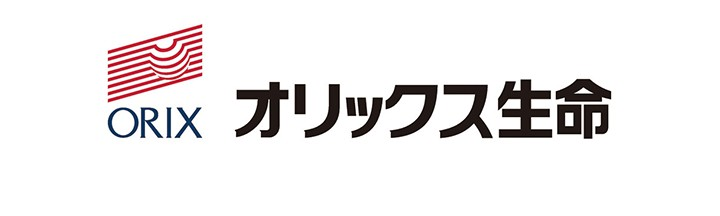
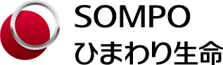
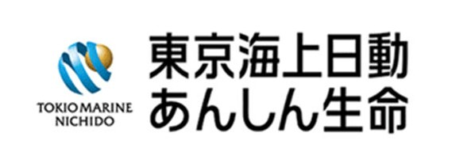
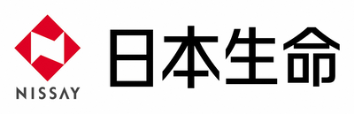
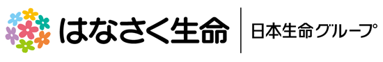
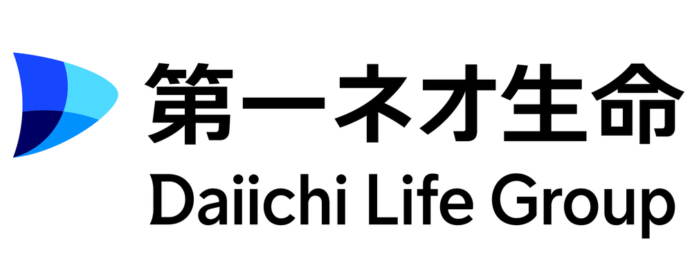
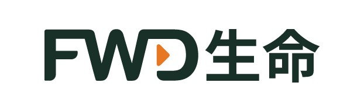
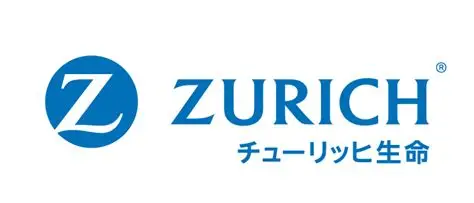
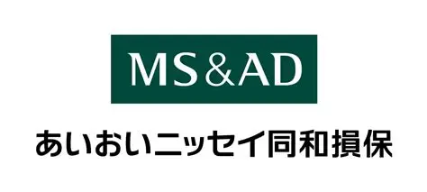
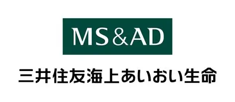
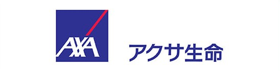
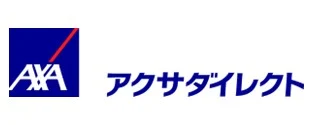
代表プロフィール
現場で「備え」の重さを知る一人として、皆さまと向き合っています。
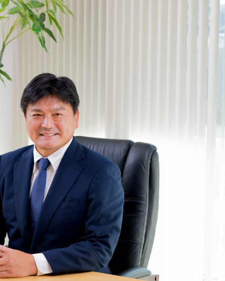
ご相談の流れ
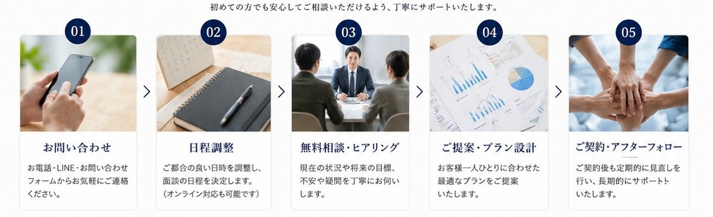
ヒアリング
お客様の現在の状況や、将来に対するご希望を丁寧に確認します。LINE・電話・フォームからお気軽にご連絡ください。
リスク分析
お伺いした内容をもとに、今必要な保障や見直すべき課題を整理し、優先順位を明確にします。
ご提案
整理した課題をもとに、最適なプランをご案内します。その場での即決は求めませんので、じっくりご検討ください。
アフターフォロー
ご契約後も定期的なフォローアップを実施。結婚・出産・住宅購入などの節目で、改めてプランを見直します。
まずはお気軽にご相談ください
相談だけでも歓迎です。ご都合の良い方法でお問い合わせください。
LINEなら、
最短で気軽に相談できます
友だち追加後、そのままチャット形式でご相談いただけます
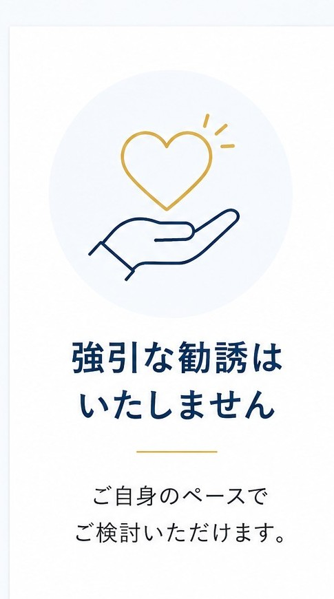
元自衛官による
誠実なサポート
規律と責任感を大切に、丁寧に対応いたします。
長期的な
パートナー
一度きりではなく、長くお付き合いできる関係を大切にしています。
フォームからのお問い合わせ
下記フォームにご記入のうえ送信してください。担当者より折り返しご連絡いたします。